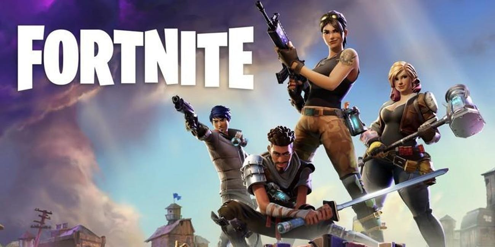

Aryaman's Favourite Games
- Fortnite
Fortnite's all about players who are dropped out of an airbus in to a map where they have to fight to win!! There are hundred players in the game. This game has cartoonish graphics and characters and might not be the game for hardcore gamers.
Advantages: Fun to play even for an amateur player, short matches
Disadvatages: Graphics can be better, Shooting is not realistic

- PUBG
In pubg you drop out of a huge cargo plane into a big map which has different terrains and has extremely realistic graphics and hardcore will like this game but if you just play for fun and are a casual gamer you probably wont like this game.
Advantages: Realistic Graphics, Big map to enjoy dynamic weather, Smooth FPS
Disadvatages: Very Violent-Not suitable for kids